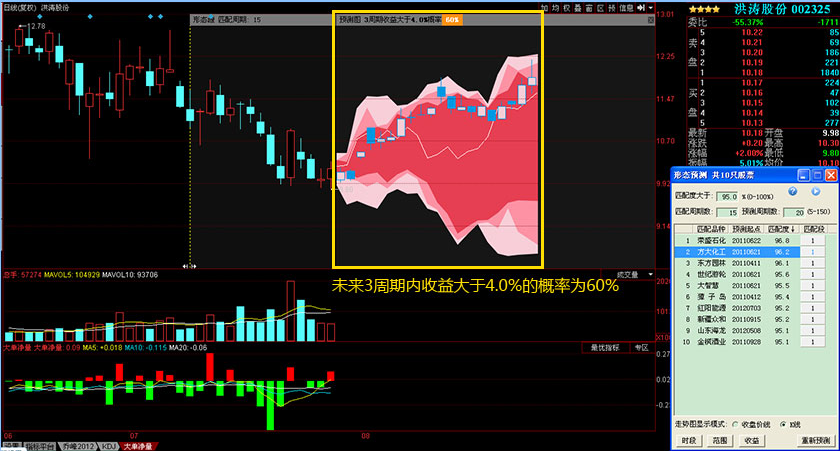
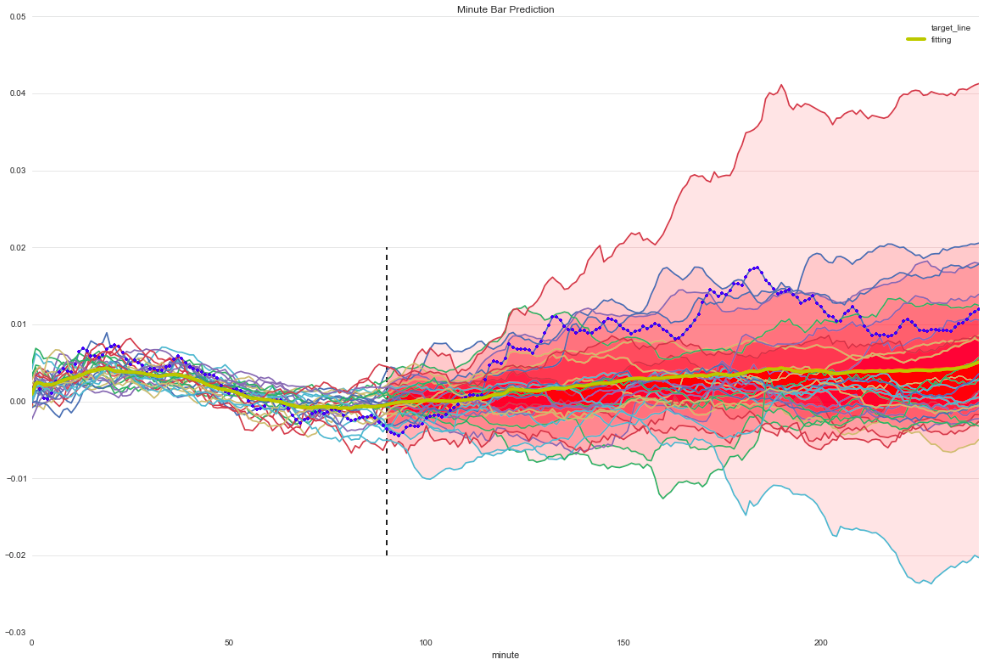
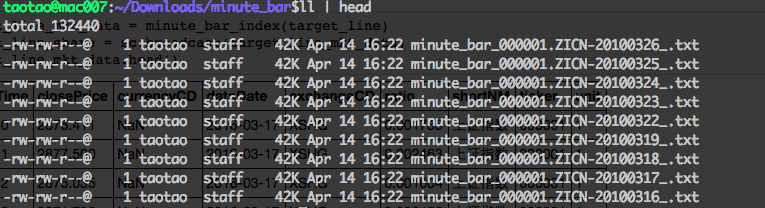

『 Spark 』8. 实战案例 ｜ Spark 在金融领域的应用 ｜ 日内走势预测
2016-04-01
写在前面
本系列是综合了自己在学习spark过程中的理解记录 ＋ 对参考文章中的一些理解 ＋ 个人实践spark过程中的一些心得而来。写这样一个系列仅仅是为了梳理个人学习spark的笔记记录，所以一切以能够理解为主，没有必要的细节就不会记录了，而且文中有时候会出现英文原版文档，只要不影响理解，都不翻译了。若想深入了解，最好阅读参考文章和官方文档。
其次，本系列是基于目前最新的 spark 1.6.0 系列开始的，spark 目前的更新速度很快，记录一下版本好还是必要的。
最后，如果各位觉得内容有误，欢迎留言备注，所有留言 24 小时内必定回复，非常感谢。
Tips: 如果插图看起来不明显，可以：1. 放大网页；2. 新标签中打开图片，查看原图哦。
1. 同花顺收费版之走势预测
2014年后半年开始，国内 A 股市场可谓是热火朝天啊，路上的人谈的都是股票。小弟虽然就职金融互联网公司，但之前从来没有买过股票，但每天听着别人又赚了几套房几辆车，那叫一个心痒痒啊，那感觉，就跟一个出浴美女和你共处一室，但你却要死忍住不去掀开浴巾一样。终于，小弟还是”犯了全天下男人都会犯的错误”，还是在 2015.03.19 那天入市了，还记得自己的第一次是献给了一支叫 天建集团 的股票，好像当天还赚了一两百块吧，当时心情那叫一个激动，下班了第一时间就打电话给娘亲了。
哦，似乎有点扯得远了。言归正传，当时自己为了投资更方便，就花了将近 300 大洋买了同花顺的 level 2 版，里面有个功能，叫做 形态预测。具体就是，根据所有股票的历史行情，看看当前股票的未来一段时间的走势分布。下面是一个截图：

截图说明：颜色越深，概率越大，包括一组预测的 k 线走势。就像上面说的，上面的那支股票的预测结果是：未来3周收益大于 4.0% 的概率有 60%。amazing…
先不说这个预测准确度有多高，但首先这个思路不错，至少可以作为一个信号吧［当然一个稳健的投资策略肯定不能仅仅依赖于一个信号］
2. 形态选股
同花顺这个功能，其实也挺实用的，因为本身在股票市场技术指标这个分类下面，就有形态选股这样一种指标。比如说，经常听财经频道主持人说的 三阳开泰，圆弧底 什么的。
3. 指数日内相似度
今天，我们就来尝试一下，通过指数日内走势来进行宏观择时: 我们在早盘 11:00 时，使用当天上证指数的分时图，预测一下当天走势情况。
原理如下：使用上证指数历史分时数据，计算历史上每天 09:30 到 11:00 的分时段走势与今天早盘 09:30 到 11:00 走势的相似度。我们认为，相似度越高，则今日 11:00 到 15:00 走势和 15:00 的收盘涨跌，与历史当日的走势和收盘涨跌有较大的相似度。
结果预览，如下图所示哦：

4. spark 实现指数日内相似度
同样，我们也用第三篇 『 Spark 』3. spark 编程模式 讲到的三个步骤来实现这个简单的，但有实践意义的 spark 应用程序。
备注：为了方便理解，我把这个例子精简过了，只用上证指数 6 年的分钟线数据，对应的相似度算法也是采用最简单的算法。但是不影响对整个应用框架的理解和扩展。
4.1 加载数据集
本文用到的数据集已经上传到百度云了，上传文件是一个压缩文件，解压缩后把整个文件夹上传到 hadoop 上就行了，文件夹里有 1505 个文件，文件名表示上证指数某日的分钟线行情，文件内容即为历史当日分钟线行情：

下面，我们先创建 SparkContext，然后加载存放在 hdfs 上的数据。
### 创建 sc
try:
sc.stop()
sc = SparkContext(conf=sc_conf)
except:
sc = SparkContext(conf=sc_conf)
### 加载 hdfs 上的数据
url = 'hdfs://10.21.208.21:8020/user/mercury/minute_bar'
rdd_mkt_data = sc.wholeTextFiles(url, minPartitions=80) \
.setName('index_minute_bar') \
.cache()4.2 处理数据
- 指定要预测的分钟线
### UDF 函数，从 rdd_mkt_data 获取某日历史分钟线行情数据
def minute_bar_index(line_id):
line_data = rdd_mkt_data.filter(lambda x: line_id in x[0]).collect()
line = pd.DataFrame.from_dict(json.loads(line_data[0][1]))
line.sort(columns=['barTime'], ascending=True, inplace=True)
return line
### 指定想要预测的线的 id，这里我们预测上证指数 2016.03.17 的分钟线
target_line = '000001.ZICN-20160317'
### 指定用于计算相似度的分钟线长度，这里我们用 90 个分钟 bar，
### 即开盘 09:30 到 11:00 的分钟线
minute_bar_length = 90
minute_bar_length_share = sc.broadcast(minute_bar_length)
target_line_mkt_data = minute_bar_index(target_line)
target_line_share = sc.broadcast(target_line_mkt_data)- 计算相似度
### 相似度计算函数
def cal_similarity(line):
"""计算相似度
"""
### 使用 sklearn，pandas 来简化计算流程
import pandas as pd
import sklearn.preprocessing
scaler = sklearn.preprocessing.MinMaxScaler()
### 通过广播变量获取预测的目标线和准备用来预测的分钟线长度
minute_length = minute_bar_length_share.value
target_line = target_line_share.value
### 参数 line 的格式是： (line_id, line_data)
line_id, line_data = line
### 获取 pandas dataframe 格式的某日分钟线行情
ticker, tradeDate = line_id[-25:-5].split('-')
line_data = pd.DataFrame.from_dict(json.loads(line_data))
line_data.sort(columns=['barTime'], ascending=True, inplace=True)
### 每天有 240 条分钟线的 bar，我们用 前 minute_length 来计算相似度
line1 = list(target_line.ratio)[: minute_length]
line2 = list(line_data.ratio)[: minute_length]
tmp = pd.DataFrame()
tmp['first'], tmp['second'] = line1, line2
tmp['diff'] = tmp['first'] - tmp['second']
diff_square = sum(tmp['diff'] ** 2)
### 返回格式：(分钟线id，该分钟线和目标线前 minute_length 个长度的相似度)
return (line_id[-25:-5], round(diff_square, 5))
### spark 相似度计算代码
rdd_similarity = rdd_mkt_data.map(cal_similarity)\
.setName('rdd_similarity') \
.cache()4.3 结果展示
- 获取相似度高的分钟线
### UDF，从 rdd_mkt_data 里获取指定的多日分钟线数据
def get_similary_line(similarity_data):
### 获取原始相似的分钟线数据
rdd_lines = rdd_mkt_data.filter(
lambda x: x[0][-25:-5] in [i[0] for i in similarity_data]
).collect()
### 把原始分钟线数据转成 pandas dataframe 格式
similar_line = {
x[0][-25:-5]: pd.DataFrame.from_dict(json.loads(x[1]))
for x in rdd_lines
}
similar_line = {
x: similar_line[x].sort(columns=['barTime'], ascending=True)
for x in similar_line
}
return similar_line
### 获取相似度最高的30日分钟线
similarity_data = rdd_similarity.takeOrdered(30, key=lambda x: x[1])
similar_line = get_similary_line(similarity_data)- 根据相似分钟线绘制预测图
def draw_similarity(target_line, minute_bar_length, similarity_data):
res = pd.DataFrame()
columns = []
for i in similarity_data:
line_id = i[0]
line_data = similar_line[line_id]
res[line_id] = line_data.ratio
if 'minute' not in res :
res['minute'] = line_data.barTime
columns.append(line_id)
res['fitting'] = res[columns].sum(axis=1) / len(columns)
res['target_line'] = target_line_mkt_data.ratio
### plot
ax = res.plot(x='minute', y=columns, figsize=(20, 13),
legend=False, title=u'Minute Bar Prediction')
res.plot(y=['target_line'], ax=ax, linewidth=5, style='.b')
res.plot(y=['fitting'], ax=ax, linewidth=4, style='-y')
ax.vlines(x=minute_bar_length, ymin=-0.02, ymax=0.02,
linestyles='dashed')
ax.set_axis_bgcolor('white')
ax.grid(color='gray', alpha=0.2, axis='y')
### plot area
avg_line = res['fitting']
avg_line = list(avg_line)[minute_bar_length : ]
for line in columns:
predict_line = res[line]
predict_line = list(predict_line)[minute_bar_length : ]
ax.fill_between(range(minute_bar_length, 241), avg_line,
predict_line, alpha=0.1, color='r')
return res, ax
res, ax = draw_similarity(target_line, minute_bar_length, similarity_data)5. Next
这个例子还算 ok 吧，可是我每天都应用的投资策略的一部分啊，已经下血本了，各位还不打赏打赏吗？一转眼 spark 已经快要有十篇 blog 了，本来原计划第九篇是总结一些 spark 性能优化的 tips 的。可是前几天一个朋友突然问我是怎么开发 spark 应用程序的。我才恍然大悟，一下子写了这么多篇，都没有把搭建开发环境的经验写出来的呢。
下一篇我就总结一下自己怎么搭建的一个 ipython + spark 的开发环境；不管各位有没有用过 ipython [notebook]，我都强烈推荐使用，使用它能打打提高你的开发效率和开发体验，你一定会爱上他的，相信我。
6. 打开微信，扫一扫，点一点，棒棒的，^_^

参考文章
- Spark SQL, DataFrames and Datasets Guide
- Introducing DataFrames in Spark for Large Scale Data Science
- From Webinar Apache Spark 1.5: What is the difference between a DataFrame and a RDD?
- 用Apache Spark进行大数据处理——第二部分：Spark SQL
- An introduction to JSON support in Spark SQL
- Spark新年福音：一个用于大规模数据科学的API——DataFrame
- An introduction to JSON support in Spark SQL
本系列文章链接
- 『 Spark 』1. spark 简介
- 『 Spark 』2. spark 基本概念解析
- 『 Spark 』3. spark 编程模式
- 『 Spark 』4. spark 之 RDD
- 『 Spark 』5. 这些年，你不能错过的 spark 学习资源
- 『 Spark 』6. 深入研究 spark 运行原理之 job, stage, task
- 『 Spark 』7. 使用 Spark DataFrame 进行大数据分析
- 『 Spark 』8. 实战案例 ｜ Spark 在金融领域的应用 ｜ 日内走势预测
- 『 Spark 』9. 搭建 IPython + Notebook + Spark 开发环境
- 『 Spark 』10. spark 应用程序性能优化｜12 个优化方法